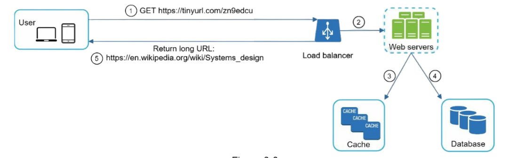
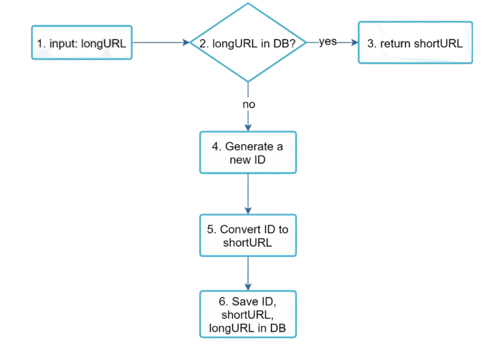

Designing a URL Shortener
I've wondered several times whether URL shorteners are easy to build. After studying them extensively, I found that I was correct. The architecture of building a URL shortener is not very difficult, though there are interesting challenges to consider.
Before starting, thank you for giving me this chance to explain this subject matter. I'll try to keep it fun and informative! 😊
First, understand the problem
The mistake we usually make is not understanding the problem completely. We should inquire about these questions:
- Can you give an example of how URL shortener works?
- What will be the traffic volume?
- How long will be the shortened URL?
- What characters are allowed in the shortened URL?
- Can shortened URLs be deleted or updated?
Back-of-the-envelope estimation
What is this new term?
For this problem, we can always make estimations and assumptions about the magnitude of its use case. A "back-of-the-envelope" calculation is a quick, rough, and informal estimate used to determine the feasibility or approximate magnitude of a problem using simple arithmetic and rounded numbers. Still not clear? Let me give you an example for this URL shortener problem:
- Write operation: 100 million URLs are generated per day.
- Write operation per second: 100 million / 24 / 3600 = 1160
- Read operation: Assuming the ratio of read operations to write operations is 10:1, read operations per second: 1160 * 10 = 11,600
- Storage estimation: Assuming the URL shortener service will run for 10 years, this means we must support 100 million * 365 * 10 = 365 billion records.
- URL length: Assume the average URL length is 100 characters.
- Storage requirement: Over 10 years: 365 billion * 100 bytes = 36.5 TB
High-Level Design
Now we have done good work understanding the number of requests, URL length, data required, etc. You may also add a few more things that are relevant to scale and plan the architecture. Now, let's think about the high-level design components.
1. API Endpoints
For this use case, two endpoints will be sufficient. One will be used for sending the long URL and getting back a short URL (URL shortening endpoint). The second will be the redirecting endpoint.
You understand what the first endpoint does, but is the second endpoint (redirect) unclear? Let's understand it in detail:
URL Shortening
Let's say we have a URL www.example-blog.com/this_is_a_long_url/krishna_is_supreme and we send it to the shortener endpoint. The shortener endpoint performs some magic (we'll see this in the next section) and returns a shortened URL: www.shortener.com/asd21
But the question you should ask is: how do we get back the long URL from www.shortener.com/asd21? This shortened URL acts as a redirecting URL.
URL Redirecting
- When you request
www.shortener.com/asd21, a request goes to the URL shortening server. - The server retrieves the corresponding long URL for this hash
asd21. - The server sends back a response with status code 301 (redirect) or 302 (temporary redirect).

Example of redirecting endpoint:
import express from "express";
const app = express();
const port = 3000;
app.get("/redirect", (req, res) => {
return res.set('location', "https://google.com").status(301).send();
});
app.listen(port, () => {
console.log("Listening to port " + port);
});301 vs 302 Redirects
- 301 redirect: A 301 redirect shows that the requested URL is "permanently" moved to the long URL. Since it is permanently redirected, the browser caches the response, and subsequent requests for the same URL will not be sent to the URL shortening service. Instead, requests are redirected to the long URL server directly.
- 302 redirect: A 302 redirect means that the URL is "temporarily" moved to the long URL, meaning that subsequent requests for the same URL will be sent to the URL shortening service first. Then, they are redirected to the long URL server.
Each redirection method has its pros and cons. If the priority is to reduce server load, using a 301 redirect makes sense as only the first request for the same URL is sent to the URL shortening servers. However, if analytics are important, a 302 redirect is a better choice as it can track click rates and the source of clicks more easily.
Design Deep-Dive
In this section, we'll dive deep into the following: data model, hash function, URL shortening, and URL redirecting.
1. Data Model
We store the <shortURL, longURL> mapping in a relational database. A simplified version of the table contains 3 columns: id, shortURL, and longURL.
2. Hash Function
Hash Value Length
The hash value consists of characters from [0-9, a-z, A-Z], containing 10 + 26 + 26 = 62 possible characters. To figure out the length of the hash value, we need to find the smallest n such that 62^n ≥ 365 billion. The system must support up to 365 billion URLs based on our back-of-the-envelope estimation.
Calculation: 62^7 = ~3.5 trillion, which is greater than 365 billion, so a 7-character hash is sufficient.
We will explore two types of hash functions for a URL shortener. The first one is "hash + collision resolution," and the second one is "base 62 conversion." Let's examine them one by one.
1. Hash + Collision Resolution
To shorten a long URL, we should implement a hash function that hashes a long URL to a 7-character string. A straightforward solution is to use well-known hash functions like CRC32, MD5, or SHA-1.
Drawbacks of this approach:
- ❌ Collision handling adds complexity
- ❌ Needs DB checks on every insert
- ❌ Truncation increases collision probability
- ❌ Harder to guarantee uniqueness at massive scale
But the hash is too long—how can we make it shorter?
- The first approach is to take the first 7 characters of a hash value; however, this method can lead to hash collisions.
- To resolve hash collisions, we can recursively append a new predefined string until no more collisions are discovered.

This method can eliminate collision; however, it is expensive to query the database to check if a shortURL exists for every request. A technique called bloom filters can improve performance. A bloom filter is a space-efficient probabilistic technique to test if an element is a member of a set.
2. Base 62 Conversion
Base conversion is another approach commonly used for URL shorteners. Base conversion helps convert the same number between different number representation systems. Base 62 conversion is used because there are 62 possible characters for the hash value. Let's use an example to explain how the conversion works: convert 11157₁₀ to base 62 representation.
- Base 62 uses 62 characters for encoding. The mappings are: 0→0, ..., 9→9, 10→a, 11→b, ..., 35→z, 36→A, ..., 61→Z, where 'a' represents 10, 'Z' represents 61, etc.
- 11157₁₀ = 2 × 62² + 55 × 62¹ + 59 × 62⁰ = [2, 55, 59] → [2, T, X] in base 62 representation.
URL Shortening Deep-Dive
Here's the step-by-step process:
- Input: The long URL is
https://en.wikipedia.org/wiki/Systems_design - ID Generation: Unique ID generator returns ID:
2009215674938 - Conversion: Convert the ID to shortURL using base 62 conversion. ID
2009215674938converts to"zn9edcu" - Storage: Save ID, shortURL, and longURL to the database
| ID | shortURL | longURL |
|---|---|---|
| 2009215674938 | zn9edcu | https://en.wikipedia.org/wiki/Systems_design |
URL Retrieval Deep-Dive
Since there are more reads than writes, the <shortURL, longURL> mapping is stored in a cache to improve performance. When a user clicks on a shortened URL:
- Cache Check: First, check if the mapping exists in the cache
- Database Lookup: If not in cache, query the database
- Cache Update: Store the result in cache for future requests
- Redirect: Return the appropriate redirect response
Bonus Topics
- Rate Limiter: A potential security problem we could face is malicious users sending an overwhelmingly large number of URL shortening requests. Implementing rate limiting prevents abuse and ensures fair usage.
- Web Server Scaling: Since the web tier is stateless, it's easy to scale by adding or removing web servers based on demand.
- Database Scaling: Database replication and sharding are common techniques to handle increased load and provide better availability.
- Analytics: Data is increasingly important for business success. Integrating an analytics solution into the URL shortener could help answer important questions like: How many people click on a link? What's the geographic distribution of users? What are the peak usage times?
- Security: Consider implementing HTTPS, input validation, and protection against malicious URLs to ensure user safety.
Wrapping Up
URL shorteners might seem simple on the surface, but as we've seen, there are many interesting challenges when you start thinking about scale, performance, and reliability. From choosing the right hash function to implementing proper caching strategies, each decision impacts how your system will perform under load.
The key takeaways are:
- Always start by understanding the requirements completely
- Do back-of-the-envelope calculations to understand scale
- Consider trade-offs between different approaches
- Think about caching, security, and analytics from the beginning
I hope this deep dive was helpful! Building systems that handle massive scale is both challenging and rewarding. Next time someone asks you to design a URL shortener, you'll be ready with a comprehensive solution.
Happy coding! 🚀
- Your fellow soul (harsh).